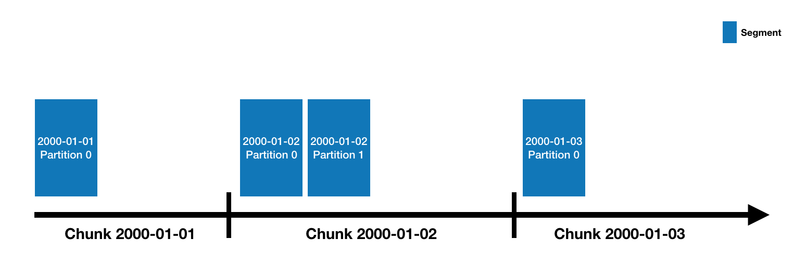

Looking for the latest stable documentation?
What is Druid?
Druid is a data store designed for high-performance slice-and-dice analytics ("OLAP"-style) on large data sets. Druid is most often used as a data store for powering GUI analytical applications, or as a backend for highly-concurrent APIs that need fast aggregations. Common application areas for Druid include:
- Clickstream analytics
- Network flow analytics
- Server metrics storage
- Application performance metrics
- Digital marketing analytics
- Business intelligence / OLAP
Druid's key features are:
- Columnar storage format. Druid uses column-oriented storage, meaning it only needs to load the exact columns needed for a particular query. This gives a huge speed boost to queries that only hit a few columns. In addition, each column is stored optimized for its particular data type, which supports fast scans and aggregations.
- Scalable distributed system. Druid is typically deployed in clusters of tens to hundreds of servers, and can offer ingest rates of millions of records/sec, retention of trillions of records, and query latencies of sub-second to a few seconds.
- Massively parallel processing. Druid can process a query in parallel across the entire cluster.
- Realtime or batch ingestion. Druid can ingest data either realtime (ingested data is immediately available for querying) or in batches.
- Self-healing, self-balancing, easy to operate. As an operator, to scale the cluster out or in, simply add or remove servers and the cluster will rebalance itself automatically, in the background, without any downtime. If any Druid servers fail, the system will automatically route around the damage until those servers can be replaced. Druid is designed to run 24/7 with no need for planned downtimes for any reason, including configuration changes and software updates.
- Cloud-native, fault-tolerant architecture that won't lose data. Once Druid has ingested your data, a copy is stored safely in deep storage (typically cloud storage, HDFS, or a shared filesystem). Your data can be recovered from deep storage even if every single Druid server fails. For more limited failures affecting just a few Druid servers, replication ensures that queries are still possible while the system recovers.
- Indexes for quick filtering. Druid uses CONCISE or Roaring compressed bitmap indexes to create indexes that power fast filtering and searching across multiple columns.
- Approximate algorithms. Druid includes algorithms for approximate count-distinct, approximate ranking, and computation of approximate histograms and quantiles. These algorithms offer bounded memory usage and are often substantially faster than exact computations. For situations where accuracy is more important than speed, Druid also offers exact count-distinct and exact ranking.
- Automatic summarization at ingest time. Druid optionally supports data summarization at ingestion time. This summarization partially pre-aggregates your data, and can lead to big costs savings and performance boosts.
When should I use Druid?
Druid is likely a good choice if your use case fits a few of the following descriptors:
- Insert rates are very high, but updates are less common.
- Most of your queries are aggregation and reporting queries ("group by" queries). You may also have searching and scanning queries.
- You are targeting query latencies of 100ms to a few seconds.
- Your data has a time component (Druid includes optimizations and design choices specifically related to time).
- You may have more than one table, but each query hits just one big distributed table. Queries may potentially hit more than one smaller "lookup" table.
- You have high cardinality data columns (e.g. URLs, user IDs) and need fast counting and ranking over them.
- You want to load data from Kafka, HDFS, flat files, or object storage like Amazon S3.
Situations where you would likely not want to use Druid include:
- You need low-latency updates of existing records using a primary key. Druid supports streaming inserts, but not streaming updates (updates are done using background batch jobs).
- You are building an offline reporting system where query latency is not very important.
- You want to do "big" joins (joining one big fact table to another big fact table).
Architecture
Druid has a multi-process, distributed architecture that is designed to be cloud-friendly and easy to operate. Each Druid process type can be configured and scaled independently, giving you maximum flexibility over your cluster. This design also provides enhanced fault tolerance: an outage of one component will not immediately affect other components.
Druid's process types are:
- Historical processes are the workhorses that handle storage and querying on "historical" data (including any streaming data that has been in the system long enough to be committed). Historical processes download segments from deep storage and respond to queries about these segments. They don't accept writes.
- MiddleManager processes handle ingestion of new data into the cluster. They are responsible for reading from external data sources and publishing new Druid segments.
- Broker processes receive queries from external clients and forward those queries to Historicals and MiddleManagers. When Brokers receive results from those subqueries, they merge those results and return them to the caller. End users typically query Brokers rather than querying Historicals or MiddleManagers directly.
- Coordinator processes watch over the Historical processes. They are responsible for assigning segments to specific servers, and for ensuring segments are well-balanced across Historicals.
- Overlord processes watch over the MiddleManager processes and are the controllers of data ingestion into Druid. They are responsible for assigning ingestion tasks to MiddleManagers and for coordinating segment publishing.
- Router processes are optional processes that provide a unified API gateway in front of Druid Brokers, Overlords, and Coordinators. They are optional since you can also simply contact the Druid Brokers, Overlords, and Coordinators directly.
Druid processes can be deployed individually (one per physical server, virtual server, or container) or can be colocated on shared servers. One common colocation plan is a three-type plan:
- "Data" servers run Historical and MiddleManager processes.
- "Query" servers run Broker and (optionally) Router processes.
- "Master" servers run Coordinator and Overlord processes. They may run ZooKeeper as well.
In addition to these process types, Druid also has three external dependencies. These are intended to be able to leverage existing infrastructure, where present.
- Deep storage, shared file storage accessible by every Druid server. This is typically going to be a distributed object store like S3 or HDFS, or a network mounted filesystem. Druid uses this to store any data that has been ingested into the system.
- Metadata store, shared metadata storage. This is typically going to be a traditional RDBMS like PostgreSQL or MySQL.
- ZooKeeper is used for internal service discovery, coordination, and leader election.
The idea behind this architecture is to make a Druid cluster simple to operate in production at scale. For example, the separation of deep storage and the metadata store from the rest of the cluster means that Druid processes are radically fault tolerant: even if every single Druid server fails, you can still relaunch your cluster from data stored in deep storage and the metadata store.
The following diagram shows how queries and data flow through this architecture:

Datasources and segments
Druid data is stored in "datasources", which are similar to tables in a traditional RDBMS. Each datasource is partitioned by time and, optionally, further partitioned by other attributes. Each time range is called a "chunk" (for example, a single day, if your datasource is partitioned by day). Within a chunk, data is partitioned into one or more "segments". Each segment is a single file, typically comprising up to a few million rows of data. Since segments are organized into time chunks, it's sometimes helpful to think of segments as living on a timeline like the following:

A datasource may have anywhere from just a few segments, up to hundreds of thousands and even millions of segments. Each segment starts life off being created on a MiddleManager, and at that point, is mutable and uncommitted. The segment building process includes the following steps, designed to produce a data file that is compact and supports fast queries:
- Conversion to columnar format
- Indexing with bitmap indexes
- Compression using various algorithms
- Dictionary encoding with id storage minimization for String columns
- Bitmap compression for bitmap indexes
- Type-aware compression for all columns
Periodically, segments are committed and published. At this point, they are written to deep storage, become immutable, and move from MiddleManagers to the Historical processes (see Architecture above for details). An entry about the segment is also written to the metadata store. This entry is a self-describing bit of metadata about the segment, including things like the schema of the segment, its size, and its location on deep storage. These entries are what the Coordinator uses to know what data should be available on the cluster.
Query processing
Queries first enter the Broker, where the Broker will identify which segments have data that may pertain to that query. The list of segments is always pruned by time, and may also be pruned by other attributes depending on how your datasource is partitioned. The Broker will then identify which Historicals and MiddleManagers are serving those segments and send a rewritten subquery to each of those processes. The Historical/MiddleManager processes will take in the queries, process them and return results. The Broker receives results and merges them together to get the final answer, which it returns to the original caller.
Broker pruning is an important way that Druid limits the amount of data that must be scanned for each query, but it is not the only way. For filters at a more granular level than what the Broker can use for pruning, indexing structures inside each segment allow Druid to figure out which (if any) rows match the filter set before looking at any row of data. Once Druid knows which rows match a particular query, it only accesses the specific columns it needs for that query. Within those columns, Druid can skip from row to row, avoiding reading data that doesn't match the query filter.
So Druid uses three different techniques to maximize query performance:
- Pruning which segments are accessed for each query.
- Within each segment, using indexes to identify which rows must be accessed.
- Within each segment, only reading the specific rows and columns that are relevant to a particular query.
External Dependencies
Deep storage
Druid uses deep storage only as a backup of your data and as a way to transfer data in the background between Druid processes. To respond to queries, Historical processes do not read from deep storage, but instead read pre-fetched segments from their local disks before any queries are served. This means that Druid never needs to access deep storage during a query, helping it offer the best query latencies possible. It also means that you must have enough disk space both in deep storage and across your Historical processes for the data you plan to load.
For more details, please see Deep storage dependency.
Metadata storage
The metadata storage holds various system metadata such as segment availability information and task information.
For more details, please see Metadata storage dependency
Zookeeper
Druid uses ZooKeeper (ZK) for management of current cluster state.
For more details, please see Zookeeper dependency.